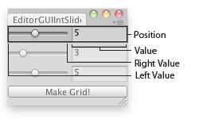

EditorGUI.IntSlider
public static int IntSlider(Rect position,
GUIContent label,
int value,
int leftValue,
int rightValue);
Parameters
| position | Rectangle on the screen to use for the slider. | |
| label | Optional label in front of the slider. | |
| value | The value the slider shows. This determines the position of the draggable thumb. | |
| leftValue | The value at the left end of the slider. | |
| rightValue | The value at the right end of the slider. |
Returns
int The value that has been set by the user.
Description 描述
Makes a slider the user can drag to change an integer value between a min and a max.

Int Slider in an Editor Window.
using UnityEditor; using UnityEngine; using System.Collections;
// Simple editor script that lets you clone your object in a grid
public class EditorGUIIntSlider : EditorWindow { int cloneTimesX = 1; int cloneTimesY = 1; int cloneTimesZ = 1; int spacing = 2;
[MenuItem("Examples/Editor GUI int slider usage")] static void Init() { UnityEditor.EditorWindow window = GetWindow(typeof(EditorGUIIntSlider)); window.position = new Rect(100, 100, 250, 100); window.Show(); }
void OnGUI() { cloneTimesX = EditorGUI.IntSlider(new Rect(0, 0, position.width, 20), cloneTimesX.ToString(), cloneTimesX, 1, 10); cloneTimesY = EditorGUI.IntSlider(new Rect(0, 25, position.width, 20), cloneTimesY.ToString(), cloneTimesY, 1, 10); cloneTimesZ = EditorGUI.IntSlider(new Rect(0, 50, position.width, 20), cloneTimesZ.ToString(), cloneTimesZ, 1, 10);
if (GUI.Button(new Rect(0, 75, position.width, 15), "Make Grid!")) { CloneSelected(); } }
void CloneSelected() { if (!Selection.activeGameObject) { Debug.Log("Select a GameObject first"); return; }
for (int i = 0; i < cloneTimesX; i++) { for (int j = 0; j < cloneTimesY; j++) { for (int k = 0; k < cloneTimesZ; k++) { Instantiate(Selection.activeGameObject, new Vector3(i, j, k) * spacing, Selection.activeGameObject.transform.rotation); } } } } }
public static void IntSlider(Rect position,
SerializedProperty property,
int leftValue,
int rightValue);
public static void IntSlider(Rect position,
SerializedProperty property,
int leftValue,
int rightValue,
string label);
public static void IntSlider(Rect position,
SerializedProperty property,
int leftValue,
int rightValue,
GUIContent label);
Parameters
| position | Rectangle on the screen to use for the slider. | |
| label | Optional label in front of the slider. | |
| property | The value the slider shows. This determines the position of the draggable thumb. | |
| leftValue | The value at the left end of the slider. | |
| rightValue | The value at the right end of the slider. |
Description 描述
Makes a slider the user can drag to change a value between a min and a max.